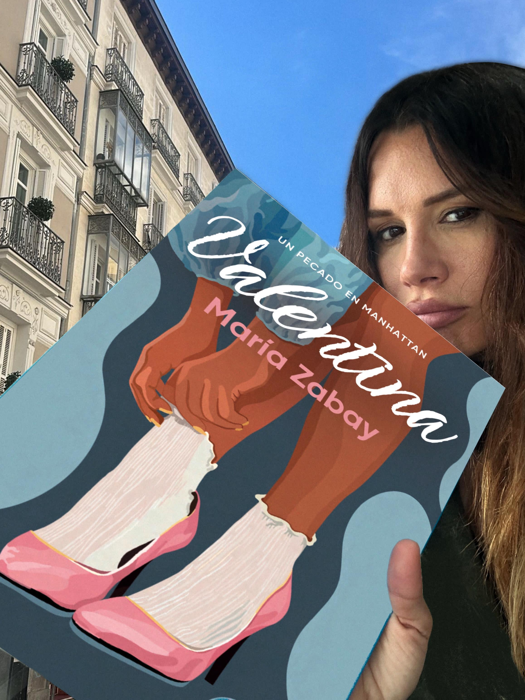
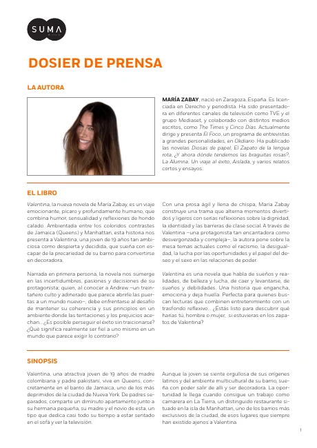
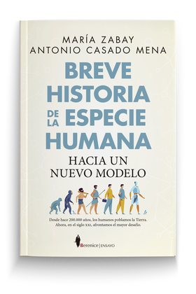

Salir adelante
El esfuerzo de quien busca una oportunidad partiendo con menos recursos que los demás.
UNA PÍCARA EN MANHATTAN / 01
Desde el corazón de Queens hasta las alturas de Manhattan, una joven dispuesta a abrirse camino con ingenio, descaro y una idea muy suya de la libertad.
Una novela publicada por SUMA · 2025
Humor. Ambición. Supervivencia.
Pasa el cursor por la portada para ver el vídeoToca la portada para ver el vídeo
Valentina quiere ser decoradora. Nació en un mundo donde los sueños tienen que hacerse un hueco entre la falta de oportunidades y las reglas que otros han escrito.
Orgullosa de sus raíces y de la mezcla de culturas de su barrio, aspira a una vida distinta. Manhattan parece ofrecerla: apartamentos imposibles, dinero, puertas cerradas y personas acostumbradas a que siempre se abran. Valentina llegará hasta allí utilizando los recursos que conoce mejor: la inteligencia, la audacia y una picardía que no pide disculpas.
María Zabay sitúa a su protagonista entre la ambición y el desencanto, con humor, deseo y una mirada incómoda a la desigualdad. Su aventura remite a los pícaros de la literatura clásica, pero transcurre en una Nueva York de privilegios, contradicciones y oportunidades desiguales.
Conoce a ValentinaLas raíces. El barrio. El punto de partida.
El deseo de llegar. La realidad de estar allí.
Una antiheroína que sabe que nadie va a regalarle la oportunidad que busca.
Valentina tiene un objetivo y pocas ganas de esperar a que alguien le conceda permiso.
Es pícara, mordaz y capaz de utilizar el humor y la seducción a su favor. También se equivoca, se decepciona y debe elegir qué está dispuesta a aceptar para llegar más lejos. Su fuerza está en esa mezcla de vulnerabilidad y descaro que la vuelve humana.
La novela se pregunta hasta qué punto somos libres cuando el origen, el dinero y las expectativas de los demás condicionan nuestras decisiones. Valentina responde a esas presiones a su manera.
Entre el pulso de la ciudad y las decisiones de su protagonista, la historia deja abiertas preguntas que van bastante más allá de una aventura sentimental.
El esfuerzo de quien busca una oportunidad partiendo con menos recursos que los demás.
El ingenio como forma de supervivencia. Una tradición literaria trasladada al Nueva York contemporáneo.
Lo que separa a quienes nacen con privilegios de quienes tienen que encontrar su propia entrada.
La manera en que el deseo interviene en las relaciones y en las decisiones que nos definen.
Dos miradas de escritores que subrayan el descaro y la humanidad de su protagonista.
«Pícara, desvergonzada»
«Valiente, imperfecta y profundamente humana»
Reseñas, análisis y entrevistas sobre la novela y su autora. Cada artículo enlaza con la publicación original.
Una selección de lecturas sobre Valentina. La hemeroteca completa se organiza en las carpetas superiores.
Un análisis que sitúa la obra entre la novela de formación, la ficción contemporánea y la picaresca.
Leer artículoMaría Prats Bonillo aborda la diferencia de clases, la autonomía y la tensión entre el deseo y las convenciones.
Leer artículoLa autora explica el vínculo de Valentina con la tradición picaresca y las barreras sociales de Nueva York.
Leer entrevistaConversación sobre las influencias narrativas, la identidad y las reglas sociales que condicionan la libertad.
Leer entrevistaMaría Zabay explica por qué quiso escribir una historia de ambición y superación con una protagonista descarada.
Leer entrevistaUna conversación sobre la escritura, el trabajo, las decisiones y la construcción de la propia identidad.
Leer entrevistaLa escritora habla de su intención de construir un personaje contradictorio, difícil de encasillar.
Leer entrevistaNo hay artículos en esta categoría.
Una mirada animada al universo de la novela y a su protagonista, entre los barrios de Queens y la promesa de Manhattan.
Esta pieza audiovisual pertenece a los materiales promocionales de la obra. Puedes reproducirla cuando quieras; es independiente del vídeo que aparece al girar la portada de la cabecera.

Abre el libro y entra en las primeras páginas de la novela. Si quieres saber más sobre la obra y su autora, también puedes consultar el dosier de prensa.
Un primer encuentro con Valentina, su mundo y la voz de una protagonista empeñada en salir adelante.
Pulsa la portada para abrir el libro y leerlo aquí.

Información editorial sobre María Zabay y Valentina, con la presentación y la sinopsis de la obra.
Abrir dosier de prensa Descargar PDFLa escritura de María Zabay se despliega entre la novela, el relato y la no ficción. Aquí puedes recorrer una selección de sus títulos. Cada cubierta podrá enlazar a la web de su libro cuando esté disponible.
 Una novela sobre el poder y sus contradicciones.MiseriaVisitar su web
Una novela sobre el poder y sus contradicciones.MiseriaVisitar su web  Novela histórica.El zapato de la lengua rotaPágina individual pendiente
Novela histórica.El zapato de la lengua rotaPágina individual pendiente Narrativa.La alumnaPágina individual pendiente
Narrativa.La alumnaPágina individual pendiente Novela.El contratoPágina individual pendiente
Novela.El contratoPágina individual pendiente Narrativa.Del amor y otros desastres naturalesPágina individual pendiente
Narrativa.Del amor y otros desastres naturalesPágina individual pendiente Narrativa.Diosas de papelPágina individual pendiente
Narrativa.Diosas de papelPágina individual pendiente
Ensayo.Breve historia de la especie humanaPágina individual pendiente No ficción.Un viaje al éxitoPágina individual pendiente
No ficción.Un viaje al éxitoPágina individual pendiente Educación y convivencia.Todos contra el bullyingPágina individual pendiente
Educación y convivencia.Todos contra el bullyingPágina individual pendienteConoce a una protagonista que se niega a aceptar que su origen decida hasta dónde puede llegar.
Los precios y la disponibilidad se consultan en cada librería.